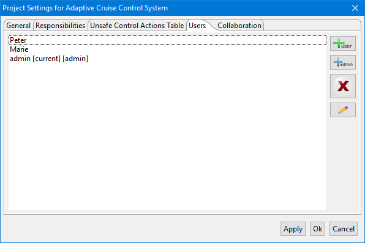
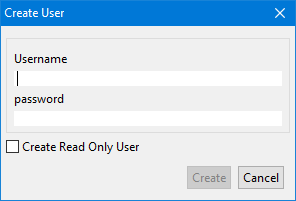
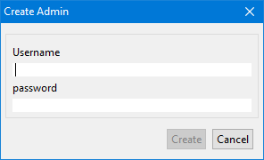
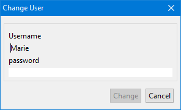
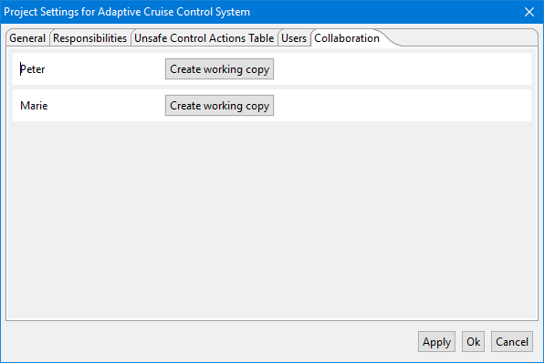
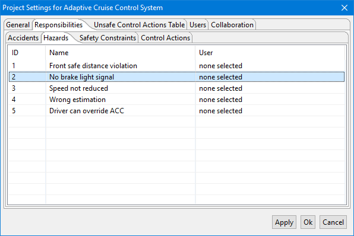

| Create User database | Prompts the user with a login dialog for creating a new administrator account. This is than used as first user in a new user system associated with the current project. After the initial administrator has been created the user system can be edited and new users/administrators can be added. |
| Use existing Userdata | If a user system has been previously created with XSTAMPP than it can be reused by clicking on Use existing Userdata which will open a file dialog to choose �n existing *.user file |
User settings
|  Prompts the user with a user creation dialog for creating a new user account. The User name and password are mandatory to create the user additionally a user can get a read only status to permanently prevent this user from making any changes on in project. | |
|  Prompts the user with a administrator creation dialog for creating a new administrator account. | |
|  Prompts the user with an edit dialog in which the password of a user can be reseted. |
Collaboration settings
 On this page an administrator can create user copies of the project for each user registered with write permissions.A user copy is a project file named projectName_userName.
Every user copy can only be accessed by the respective user for which it has been created.
 After a user copy has been created the administrator can synchronize the changes of each user based on the responsibility settings.
After a user copy has been created the administrator can synchronize the changes of each user based on the responsibility settings.e.g. assume user Peter has been given the responsibility for Hazard-1 and changed it in his user copy. If the administrator clicks on Get changes form... than the changes Peter applied to Hazard-1 are synchronized with the main project.
Responsibility settings
 On this page an administrator can give and take responsibilities to/from users based on four categories.| Accidents | if a users is responsible for an Accident he can edit the title and description of it as well as add new hazard or safety constraint links |
| Hazards | if a users is responsible for a Hazard he can edit the title and description of it as well as add new accident links |
| Safety Constraint | if a users is responsible for a Safety Constraint he can edit the title and description of it as well as add new design requirement links |
| Control Action | if a users is responsible for a Control Action he can edit the title and description. The Responsibility for a Control Action also means that the user can add/edit Unsafe Control Actions for that Control Action as well as edit the corresponding safety constraint of the created UCAs. |